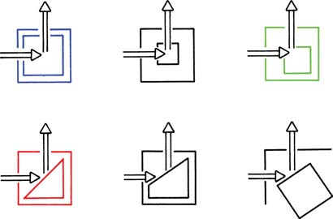

In optical spectroscopy, photoluminescence involves first the excitation of a molecule by the absorption of ultraviolet or visible radiation and then the detection and analysis of the emitted photons (emission) from the electronically excited molecule. Depending on the spin multiplicities of the excited and ground states, fluorescence or phosphorescence phenomenon is observed. Fluorescence corresponds to the relaxation of the molecule from the singlet excited state to the singlet ground state with emission of photon. There are many kinds of fluorescence spectrometers (spectrofluorimeters) available depending on the use and applications of the fluorescence property. The following types of measurements are generally performed with a spectrofluorimeter: i) recording of emission spectra and ii) excitation spectra. From these measurements, one can obtain the fluorescence quantum yield, chemical composition of the examined specimens, and qualitative and quantitative analytical information.

Familiarization with the working principles of a spectrofluorimeter and learning to use it.

Instrumentation Principle
Like other spectrometers, major components of standard fluorescence lab instrument include (1) Radiation source (e.g., broadband Xe arc lamp, monochromatic LED, laser); (2) Excitation and emission wavelength selector (e.g., monochromator, spectrograph); (3) Sample compartment; and (4) Detector (e.g., Photo Multiplier Tube (PMT), CCD camera), (Figure 1) in addition to the data processing and display unit. Use of a laser instead of a lamp as an excitation source allows one to work at low fluorophore concentrations, because a laser has higher intensity than that of a lamp. However, excitation with a laser could accelerate the rate of photo-bleaching in the cases of light-sensitive fluorophores. Two types of collection geometry in sample compartment are used avoiding the transmitted light (Figure 2). ‘Right angle’ collection geometry, in which emitted light is collected at a right angle (90o) to the incident light, is often used. This geometry is appropriate for optically transparent sample like solution. In ‘front face’ collection geometry, emitted light is collected at an acute angle relative to the incident beam. This geometry is used for an optically absorbing/scattering sample. In right angle geometry, signal reaching detector will be significantly diminished for high absorbance (optical density) sample unlike the front face collection geometry where light is absorbed near the surface of the cuvette containing the absorber. More sophisticated instruments are used for the measurement of fluorescence life time (time-resolved spectra) and fluorescence polarization measurements.

Figure 1. Schematic of a standard laboratory spectrofluorimeter.

Figure 2: Schematic of collection geometry in fluorescence spectrometers.
Top Row: Right- angle and off-center illuminations.
Bottom Row: Front-face illumination with either triangular cuvettes or square cuvettes oriented at 30° to 60° relative to the incident beam. (Courtesy: Reference 5)
The following types of measurements are generally performed with a spectrofluorimeter: (i) recording of emission spectra and (ii) excitation spectra. In emission spectra, the emission intensity as a function of the emission wavelength is observed (the excitation wavelength is fixed and the different wavelengths of fluorescent light emitted by a sample are measured using a monochromator). An excitation spectrum is the opposite. In excitation spectra, where the emission intensity as a function of the excitation wavelength is observed (the detection wavelength is fixed and the excitation wavelength is scanned through many different wavelengths across a region of interest via a monochromator). In other words, the emission spectrum corresponds to the variations of fluorescence intensity IF as a function of emission wavelength λem (the wavelength at which the fluorescence is observed), the excitation wavelength λex being fixed; whereas the excitation spectrum reflects the variations of IF as a function of λex, the observation wavelength λem being fixed.
It should be noted that fluorescence spectra can be presented on a wavelength scale (intensity vs. λ) or sometimes on a frequency (ν), or wavenumber (ṽ) scale (wavelengths and wavenumbers are reciprocal of each other). In most commercially available instruments, fluorescence spectra are recorded on the wavelength scale. Since corrected spectra are not needed on a routine basis, we are more familiar with the directly recorded uncorrected spectra on the wavelength scale and sometimes such spectra are easier to interpret visually. One should note that if two or more different substances are responsible for the observed fluorescence, then the excitation spectrum varies with the choice of emission wavelength. One should also be careful to distinguish the analyte molecule fluorescence from the Rayleigh and Raman scattering radiations generated by the sample. Here working of a spectrofluorimeter is demonstrated first schematically and then by running excitation-emission spectral scans of a common fluorophore, fluorescein, in ethanol.

- Prepare a 4.1 × 10-6 M fluorescein solution in spectroscopy grade ethanol from a 8.2 × 10-4 M fluorescein stock solution.
- Click on the volumetric flask containing the fluorescein solution to take it onto the instrument table.
- Take an all-side-transparent quartz cuvette (path length, 1 cm ×1 cm) by clicking on it.
- Click on the 5 mL‑capacity pipette to collect 3 mL of the experimental solution which will be transferred into the quartz cuvette. In real operation, one has to set the volume to 3 mL in the pipette and an appropriate tip should be attached prior to dipping it in the solution.
- Click on the pipette to draw the solution into it.
- Click on the pipette to take it out of the volumetric flask.
- Click on the pipette again to transfer the solution into the cuvette.
- Click on the pop-up “Start Fluorescence Measurement” to run the Excitation and Emission Spectral Scans of the sample on the spectrofluorimeter.
- Turn on the spectrofluorimeter by clicking on the power button. In real operation, it takes approx. 30 min for initialization of the instrument.
- Click on the lid of sample chamber of the spectrofluorimeter to open it for placing the sample in the instrument.
- Click on the cuvette to place it in the sample holder of the chamber.
- Close the lid of the sample chamber by clicking on the lid.
- To run the Excitation Spectral Scan, open the measurement set-up screen by clicking on the fluorescence measurement icon on the computer monitor.
- Select the Excitation Scan Mode on the screen.
- On the screen, enter the Emission wavelength: 515 nm, Excitation Start Wavelength: 300 nm and Excitation End wavelength: 600 nm. One chooses the Excitation Slit(nm) and Emission Slit(nm) values (here 2.5 nm/2.5 nm) and the scan speed value (here “medium” ) also.
- Click on the 'OK' button on the set-up screen to start the wavelength scan for excitation spectrum.
- Click on 'Close' button when spectral scan is complete. In real operation, the scan data are stored in the computer. The instrument stores data and therefore asks for the Sample File name. One enters a file name to save the data.
- To run the Emission Spectral Scan of the sample, open the instrument set-up screen by clicking on the fluorescence measurement icon on the computer monitor.
- Select the Emission Scan Mode on the screen.
- On the screen, enter the Excitation wavelength: 425 nm, Emission Start Wavelength: 435 nm and Emission End wavelength: 700 nm. Emission Start Wavelength value should be larger than the excitation wavelength. Often the the maximum absorbance wavelength is chosen as the excitation wavelength. The Emission End Wavelength value depends on the sample, instrument, etc. One chooses the Excitation Slit(nm) and Emission Slit(nm) values (here 2.5 nm/2.5 nm) and the scan speed value (here “medium” ) also.
- Click on the 'OK' button on the set-up screen to run the wavelength scan for emission spectrum. One has to be sure that the solvent blank does not fluoresce in the wavelength range of interest.
- Click on 'Close' button when spectral scan is complete. In real operation, the scan data are stored in the computer. The instrument stores data and therefore asks for the Sample File name. One enters a file name to save the data.
- To take the cuvette out of the sample chamber, first click on the sample chamber lid to open it and then on the cuvette.
- Close the lid of the sample chamber by clicking on the lid.
- Click on Reset button to start over the measurements.
- Collect all data by clicking on the Data tab.
- Find out the maximum excitation and emission wavelengths and intensities.


Pre-experiment Quiz
- Why do we need a radiation source of high optical power (that is, a large number of photons per unit time) in spectrofluorimeter?
- Why do we use xenon arc lamp as source in spectrofluorimeter?
- Why is a detector more powerful preferred in spectrofluorimeter than that in spectrophotometer?
- Fluorescence spectra can be presented on either a wavelength scale or a wavenumber scale. Which scale is linear in energy?
- What are the advantages and the disadvantages of using a laser instead of a lamp as an excitation source?
- All emission measurements must start far enough above the excitation wavelength. Why? (Hint. Near the excitation wavelength, reflectance, refraction and scattering are high.)
Post-experiment Quiz
- A quartz cuvette with all sides transparent are used in spectrofluorimetric measurements, unlike the ones for UV-visible spectrophotometric measurements where two opposite sides are transparent. Why?
- Why is the front face or right angle collection geometry used in fluorescence spectroscopy instead of 180° collection geometry that is used in UV-visible absorption spectroscopy?
- What collection geometry was used in the present experiment?
- What happens to the emission spectrum when the chosen excitation wavelength lies far away from the actual maximum excitation wavelength?
- “One has to be sure that the solvent blank does not fluoresce in the wavelength range of interest.” Why?

- B. Valeur, Molecular Fluorescence: Principles and Applications, 2002, Wiley-VCH, Weinheim.
- J. R. Albani, Principles and Applications of Fluorescence Spectroscopy, 2007, Blackwell Science Science Ltd, Oxford, UK.
- P. Patnaik, Dean’s Analytical Chemistry Handbook, 2nd Edition, McGraw-Hill Handbooks.
- F. A. Settle, Handbook of Instrumental Techniques for Analytical Chemistry, 1st Edition, 1997, National Science Foundation, Arlington, Virginia.
- J. R. Lakowicz, Principles of Fluorescence Spectroscopy, 2nd Ed., Kluwer Academic/Plenum Publishers, New York, London, Moscow, Dordrecht, 1999.
- D. M. Jameson et al. in Basic Concepts in Fluorescence, Fluorescence: Basic Concepts, Principles Aspects and some Anecdotes, Methods Enzymol. 2003, 360, 1.
- P. Atkins and J. D. Paula, Atkin's Physical Chemistry, 9th Edition, Oxford University Press.
- A. Cook and A. Le , “The Effect of Solvent and pH on the Fluorescence Excitation and Emission Spectra of Solutions Containing Fluorescein”, J. Phys. Chem. Lab 2006, 10, 44.
- http://omlc.ogi.edu/spectra/PhotochemCAD/index.html.
 Experiments
Experiments Feedback
Feedback